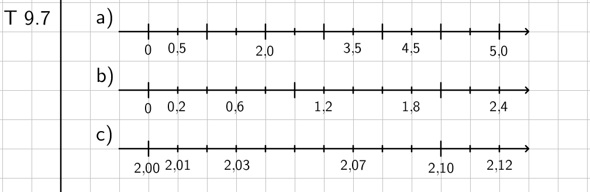
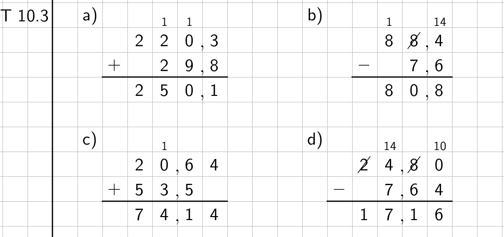

1. Lukujärjestelmä
Tehtävä 1.1: Johdatus kymmenjärjestelmään (Tentti)
Kysymys 1 (Vedä kohde kuvan päälle)
Tehtävän tarkoituksena on raahata suuruusluokkaa (lukuyksikköä) kuvaava sana oikean numeron alapuolelle. Tehtävän tavoitteena on kerrata tärkeimmät kymmenkantaisen paikkajärjestelmän numeroiden paikkaa kuvaavat nimitykset.
Kysymys 2 (Aukkotehtävä)
Tehtävän tarkoituksena on kuunnella neljä ääninäytettä, ja kirjoittaa ääninäytteellä sanottu luku numeroin vastauskenttään. Ääninäytteen voi kuunnella useita kertoja. Tehtävän tarkoituksena on harjoitella puhutun ja numeroin merkityn luvun välistä yhteyttä.
Kysymys 3 (Aukkotehtävä)
Tehtävän tarkoituksena on kirjoittaa numeroin merkitty luku sanoin tekstinä vastauskenttään. Vastaus voidaan kirjoittaa kieliopin mukaisesti yhdyssanana tai kirjoittaa välilyönti tuhansien jälkeen selkeyttämään vastauksen tarkistamista.
Tehtävä 1.2: Numeron paikka luvussa (Sähköinen tehtävä)
Tehtävän tarkoituksena on kerrata kymmenkantaisen paikkajärjestelmän paikkojen (lukuyksiköiden) nimiä. Esimerkkinä kertaus numeroiden lukuyksiköistä ja niiden paikoista luvussa. Tehtävässä on 12 laskua, joissa oppilaan pitää syöttää kysyttyä lukuyksikköä vastaava numero annetusta luvusta. Vinkkinä oppilas voi värikoodatusti palauttaa mieleen lukuyksiköt. Laskuista on kolme variaatiota.
- Laskut 1-4: Luvun suuruusluokka on enintään satojatuhasia ja vähintään satoja.
- Laskut 5-8: Luvun suuruusluokka on enintään kymmeniä miljoonia ja vähintään kymmeniätuhansia.
- Laskut 9-12: Luvun suuruusluokka on enintään kymmeniä miljardeja ja vähintään satojatuhansia.
Tiedosto: ma7j1_reppu_numeroluvussa.ggb
Tehtävä 1.3: Luku sanoin (Sähköinen tehtävä)
Tehtävän tarkoituksena on luvun muodostamista kirjoitetusta tekstistä ja samalla kerrata kymmenkantaisen paikkajärjestelmän lukuyksiköiden nimiä. Esimerkkinä oppilas saa luvun 2 712 046 muuttamisen sanallisesta muodosta luvuksi. Tehtävässä on 6 laskua, joissa oppilaan pitää syöttää sanoin kirjoitettu luku numeroin. Vinkkinä oppilas saa tekstiin lisää välilyöntejä. Laskuista on viisi variaatiota.
- Lasku 1: Luvun suuruusluokka on satoja tai tuhansia.
- Laskut 2-3: Luvun suuruusluokka on enintään satojatuhansia ja vähintään tuhansia.
- Lasku 4: Luvun suuruusluokka on enintään satojatuhansia ja vähintään tuhasia. Luvussa on nolla.
- Lasku 5: Luvun suuruusluokka on enintään kymmeniä miljoonia ja vähintään satojatuhansia.
- Lasku 6: Luvun suuruusluokka on enintään kymmeniä miljoonia ja vähintään satojatuhansia. Luvussa on nolla.
Tiedosto: ma7j1_reppu_lukusanoin.ggb
Tehtävä 1.4: Suuruusluokan arviointi (Tentti)
Kysymys 1 (Aukkotehtävä)
Tehtävän tarkoituksena on valita alavetovalikosta tilanteeseen parhaiten sopiva vaihtoehto erilaisista suuruusluokista.
Kysymys 2 (Vedä sanat tekstiin)
Tehtävän tarkoituksena on vetää kohdetta parhaiten kuvaava paino oikealle paikalleen.
Tehtävä 1.5: Luvun kirjoittaminen (Tentti)
Kysymys 1 (Aukkotehtävä)
Tehtävän tarkoituksena on kuunnella ääninäyte, ja kirjoittaa ääninäytteellä sanottu luku numeroin vastauskenttään. Ääninäytteen voi kuunnella useita kertoja. Tehtävän tarkoituksena on harjoitella puhutun ja numeroin merkityn luvun välistä yhteyttä.
Kysymys 2 (Aukkotehtävä)
Tehtävän tarkoituksena on kirjoittaa sanoin merkitty luku numeroin vastauskenttään. Vastaukseen voidaan kirjoittaa välilyöntejä niille kuuluville paikoille.
Kysymys 3 (Aukkotehtävä)
Tehtävän tarkoituksena on kirjoittaa numeroin merkitty luku sanoin tekstinä vastauskenttään. Vastaus voidaan kirjoittaa kieliopin mukaisesti yhdyssanana tai kirjoittaa välilyönti sille numeromerkinnässä kuuluvalle paikalle.
Tehtävä 1.6: Suuruusluokan arviointi (Tentti)
Kysymys 1 (Aukkotehtävä)
Tehtävän tarkoituksena on valita alavetovalikosta tilanteeseen parhaiten sopiva vaihtoehto erilaisista suuruusluokista.
Kysymys 2 (Vedä sanat tekstiin)
Tehtävän tarkoituksena on vetää kohdetta parhaiten kuvaava pituus/korkeus/syvyys oikealle paikalleen.
2. Lukusuora
Tehtävä 2.1: Johdatus lukusuoraan (Tentti)
Kysymys 1 (Vedä kohde kuvan päälle)
Tehtävän tarkoituksena on raahata luku oikeaan lukusuoraan oikealle paikalle. Tehtävän tavoitteena on havainnolistaa lukusuoran rakennetta.
Tehtävä 2.2: Lue luku lukusuoralta (Sähköinen tehtävä)
Tehtävän tarkoituksena on harjoitella luvun lukemista lukusuoralta. Esimerkissä muistutetaan huomioimaan lukusuoran jako. Tehtävässä on 12 laskua, joissa oppilas syöttää arvon, joka vastaa muuttujaa x lukusuoralla. Vinkkinä oppilas saa lisää lukuja lukusuoralle, joskus jopa oikean vastauksen. Laskuista on kolme variaatiota.
- Laskut 1-4: Lukusuoran näkyvä osa alkaa nollasta ja päättyy enimmillään kahdeksaan.
- Laskut 5-8: Lukusuoran näkyvä osa alkaa luvusta 1-5 ja päättyy 5-9 päähän lukusuoran alusta.
- Laskut 9-12: Lukusuoran näkyvä osa alkaa luvusta 5-9 ja päättyy 5-10 päähän lukusuoran alusta.
Tiedosto: ma7j1_reppu_luelukusuoraltaN.ggb
Tehtävä 2.3: Lisää luku lukusuoralle (Sähköinen tehtävä)
Tehtävän tarkoituksena on vahvistaa lukusuoran lukemista ja määrittämistä. Esimerkissä neuvotaan oppilasta painamaan oikeaa lukusuoran kohtaa vastauksen antamiseksi. Tehtävässä on 12 laskua, joissa oppilas merkitsee halutun luvun lukusuoralle painamalla sitä kohtaa lukusuorasta. Vinkkinä oppilas saa lisää lukuja lukusuoralle, joskus jopa oikean vastauksen. Laskuista on kolme variaatiota.
- Laskut 1-4: Lukusuoran näkyvä osa alkaa nollasta ja päättyy enimmillään kymmeneen.
- Laskut 5-8: Lukusuoran näkyvä osa alkaa nollasta ja päättyy enimmillään viiteentoista.
- Laskut 9-12: Lukusuoran näkyvä osa alkaa luvusta 5-10 ja päättyy vähintään 5 päähän lukusuoran alusta tai enintään lukuun 20.
Tiedosto: ma7j1_reppu_merkitselukusuoralle.ggb
Tehtävä 2.4: Lisää luku lukusuoralle 2 (Sähköinen tehtävä)
Sama tehtävä kuin Tehtävä 2.3: Lisää luku lukusuoralle.
Tehtävä 2.5: Lukusuoran piirtäminen (Vihkotehtävä)
Tehtävän tarkoituksena on harjoitella lukusuoran piirtämistä vihkoon sekä alkukohdan ja oikean jaon valintaa lukusuoraa piirrettäessä, jotta se mahtuu (A5-kokoiseen) vihkoon. Tehtävässä keskitytään positiivisiin kokonaislukujen. Lukusuoran piirtämistä negatiivisilla kokonaisluvuilla harjoitellaan myöhemmässä tehtävässä.
Malliratkaisu:

3. Peruslaskutoimitukset
Tehtävä 3.1: Johdatus peruslaskutoimituksiin (Tentti)
Kysymys 1 (Yhdistämistehtävä)
Tehtävän tarkoituksena on yhdistää summaa, erotusta, tuloa ja osamäärää kuvaavat käsitteet toisiinsa valitsemalla alasvetovalikosta laskutoimitusta vastaavat käsitteet. (4p)
Kysymys 2 (Aukkotehtävä)
Tehtävän tarkoituksena on vahvistaa oppilaan ymmärrystä kertolaskun merkinnästä, suhteesta yhteen- ja jakolaskuun sekä hahmottaa kertolaskua pinta-alan kautta. Kirjoita yhteenlaskuna hyväksyy sekä 3+3+3+3 että 4+4+4 vastaukset. Kirjoita kertolaskuna ja Kirjoita kuvioon liittyvä kertolasku hyväksyy sekä 5*6 että 6*5 vastaukset.(8p)
Tehtävä 3.2: Yhteenlasku (Sähköinen tehtävä)
Tehtävän tarkoituksena on harjoitella yhteenlaskua. Esimerkissä annetaan vihjeeksi päässälaskua varten mahdollisuus pilkkoa luku lukuyksiköihin eli laskea lasku osissa. Tehtävässä on 24 laskua, joissa oppilas syöttää yhteenalaskun vastauksen. Vinkkinä oppilas saa summan pilkottuna lukuyksiköihin. Laskuista on 12 variaatiota.
- Laskut 1-2: Laskun vastaus on pienempi kuin 10.
- Laskut 3-4: Laskun vastaus on 10. (Kymppiparit)
- Laskut 5-6: Laskun vastaus on 11-18 ja ensimmäinen summattava on väliltä 5-9. (Kymmenylitys)
- Laskut 7-8: Summattavat ovat samoja ja väliltä 5-19.
- Laskut 9-10: Ensimmäinen summattava on 5-19 ja toinen on yhden suurempi kuin ensimmäinen.
- Laskut 11-12: Toinen summattava on 4-8, ja vastaus on välillä 20-99.
- Laskut 13-14: Toinen summattava on 9, ja vastaus on välillä 20-99.
- Laskut 15-16: Vastaus on väliltä 40-99, ja summattavien välinen suuruusero on vähintään 11.
- Laskut 17-18: Vastaus on 100. (Sataparit)
- Laskut 19-20: Summattavat ovat samoja ja väliltä 31-79.
- Laskut 21-22: Vastaus on väliltä 201-398, ja summattavien välinen suuruusero on vähintään 50.
- Laskut 23-24: Laskussa on kolme summattavaa, joiden vaihteluvälit ovat 100-199, 20-99 ja 1-19.
Tiedosto: ma7j1_reppu_yhteenlasku.ggb
Tehtävä 3.3: Vähennyslasku (Sähköinen tehtävä)
Tehtävän tarkoituksena on harjoitella vähennyslaskua. Esimerkissä annetaan vihjeeksi päässälaskua varten mahdollisuus pilkkoa vähentäjä lukuyksiköihin eli laskea lasku osissa. Tehtävässä on 24 laskua, joissa oppilas syöttää vähennyslaskun vastauksen. Vinkkinä oppilas saa uuden näkymän, jossa vähentäjä on pilkottu lukuyksiköhin ja halutessaan oppilas voi (pisteiden kustannuksella) katsoa esimerkkiä pidemmälle tai palata tehtävään. Tehtävässä vinkkiä ei poikkeuksellisesti tule näkyviin väärän vastauksen yhteydessä. Laskuista on 12 variaatiota.
- Laskut 1-2: Vähennettävä on väliltä 5-9 ja vähentäjä on vähintään 1.
- Laskut 3-4: Vähennettävä on 10. (Kymppiparit)
- Laskut 5-6: Vähennettävä on 11-17 ja vastaus on pienempi kuin 10. (Kymmenylitys)
- Laskut 7-8: Vastaus on sama kuin vähentäjä.
- Laskut 9-10: Vastaus on melkein sama kuin vähentäjä.
- Laskut 11-12: Vähennettävä on väliltä 20-99. Vähentäjä on väliltä 4-8.
- Laskut 13-14: Vähennettävä on väliltä 20-99. Vähentäjä on 9.
- Laskut 15-16: Vähennettävä on väliltä 40-99. Vähentäjä on vähintään 11.
- Laskut 17-18: Vähennettävä on 100. (Sataparit)
- Laskut 19-20: Vähennettävä on väliltä 31-79. Vähentäjä on sama kuin vastaus.
- Laskut 21-22: Vähennettävä on väliltä 201-398. Vähentäjä ja vastaus ovat vähintään 50.
- Laskut 23-24: Vähennettävä on väliltä 100-199. Laskussa on kaksi vähentäjäjää, joista ensimmäinen on vähintään 20 ja toinen väliltä 1-19.
Tiedosto: ma7j1_reppu_vahennyslasku.ggb
Tehtävä 3.4: Kertolasku (Sähköinen tehtävä)
Tehtävän tarkoituksena on harjoitella kertolaskua. Esimerkissä korostetaan kertolaskun ja pinta-alan yhteyttä. Tehtävässä on 24 laskua, joissa oppilas syöttää kertolaskun vastauksen. Vinkkinä oppilas saa uuden näkymän, jossa kertolasku on esitetty ruudukon pinta-alan avulla. Tehtävässä vinkkiä ei poikkeuksellisesti tule näkyviin väärän vastauksen yhteydessä. Laskuista on 12 variaatiota.
- Laskut 1-2: Luvun 2 kertotaulua.
- Laskut 3-4: Luvun 5 kertotaulua.
- Laskut 5-6: Luvun 10 kertotaulua.
- Laskut 7-8: Luvun 3 kertotaulua.
- Laskut 9-10: Luvun 6 kertotaulua.
- Laskut 11-12: Luvun 9 kertotaulua.
- Laskut 13-14: Luvun 4 kertotaulua.
- Laskut 15-16: Luvun 7 kertotaulua.
- Laskut 17-18: Luvun 8 kertotaulua.
- Laskut 19-20: Tulon tekijät ovat samat.
- Laskut 21-22: Toinen tekijä on 11 tai 12.
- Laskut 23-24: Tulon tekijät ovat väliltä 6-9.
Tiedosto: ma7j1_reppu_kertolasku.ggb
Tehtävä 3.5: Jakolasku (Sähköinen tehtävä)
Tehtävän tarkoituksena on harjoitella jakolaskua. Esimerkissä muistutetaan jakolaskun ja kertolaskun yhteydestä sekä osittain jakamisesta päässälaskun tukena. Tehtävässä on 24 laskua, joissa oppilas syöttää kertolaskun vastauksen. Vinkkinä oppilas saa uuden näkymän, jossa jakolasku on pilkottu pienempien jakolaskujen summaksi. Oppilas voi halutessaan katsoa esimerkkiä pidemmälle tai palata tehtävään. Tehtävässä vinkkiä ei poikkeuksellisesti tule näkyviin väärän vastauksen yhteydessä. Laskuista on 12 variaatiota.
- Laskut 1-2: Jakaja on 2.
- Laskut 3-4: Jakaja on 5
- Laskut 5-6: Jakaja on 10.
- Laskut 7-8: Jakaja on 3.
- Laskut 9-10: Jakaja on 6.
- Laskut 11-12: Jakaja on 9.
- Laskut 13-14: Jakaja on 4.
- Laskut 15-16: Jakaja on 7.
- Laskut 17-18: Jakaja on 8.
- Laskut 19-20: Vastaus on sama kuin jakaja.
- Laskut 21-22: Jaettava on suurempi kuin 100, ja jakaja on 10.
- Laskut 23-24: Jaettava on suurempi kuin 20, ja jakaja on 2.
Tiedosto: ma7j1_reppu_jakolasku.ggb
Tehtävä 3.6 Sanallisia tehtäviä (Vihkotehtävä)
Tehtävän tarkoituksena on harjoitella sanallisen tehtävän ratkaisemista vihkoon. Laskut ovat yksinkertaisia, mutta ratkaisussa tulee kiinnittää huomiota laskulausekkeen merkitsemiseen sekä erillisen vastauksen kirjoittamiseen oikeaoppisesti kokonaisin virkkein.
Malliratkaisu:
a) \(\mathsf{3 \euro + 1 \euro + 5 \euro = 9 \euro}\)
Vastaus: Ostokset maksavat yhteensä 9 euroa.
b) \(\mathsf{20 \euro - 9 \euro = 11 \euro}\)
Vastaus: Rahaa saa takaisin 11 euroa.
c) \(\mathsf{6 \cdot 2 \euro = 12 \euro}\)
Vastaus: Jäätelöt maksavat yhteensä 12 euroa.
d) \(\mathsf{56 \euro : 7 = 8 \euro}\)
Vastaus: Kukin maksaa 8 euroa.
Tehtävä 3.7: Merkitse ja laske (Sähköinen tehtävä)
Tehtävän tarkoituksena on harjoitella peruslaskutoimitusten merkitsemistä tietokoneella ja kerrata summan, erotuksen, tulon sekä osamäärän käsitteitä. Esimerkissä kerrataan kukin laskutoimitus ja esitetään näppäinohje. Tehtävässä on 6 laskua, joissa oppilas ensin syöttää laskutoimituksen lauseke-kenttään ja tämän jälkeen laskun vastauksen. Vinkkinä oppilas saa merkintävaiheessa näppäinohjeen ko. laskutoimituksen merkitsemiseen ja vastausta laskiessaan päässälaskua tukevan vihjeen. Laskuista on 4 variaatiota (summa, erotus, tulo ja osamäärä), joka arvotaan joka laskuun erikseen.
Tiedosto: ma7j1_reppu_merkitsejalaske_lyhyt.ggb
Tehtävä 3.8: Merkitse ja laske (Sähköinen tehtävä)
Tehtävän tarkoituksena on harjoitella peruslaskutoimitusten merkitsemistä tietokoneella ja kerrata summan, erotuksen, tulon sekä osamäärän käsitteitä. Esimerkissä kerrataan kukin laskutoimitus ja esitetään näppäinohje. Tehtävässä on 12 laskua, joissa oppilas ensin syöttää laskutoimituksen lauseke-kenttään ja tämän jälkeen laskun vastauksen. Vinkkinä oppilas saa merkintävaiheessa näppäinohjeen ko. laskutoimituksen merkitsemiseen ja vastausta laskiessaan päässälaskua tukevan vihjeen. Laskuista on 4 variaatiota (summa, erotus, tulo ja osamäärä), joka arvotaan joka laskuun erikseen.
Tiedosto: ma7j1_reppu_merkitsejalaske.ggb
Tehtävä 3.9: Merkitse ja laske (Vihkotehtävä)
Tehtävän tarkoituksena on harjoitella peruslaskutoimitusten merkitsemistä vihkoon.
Malliratkaisu:
a) \(\mathsf{15 + 3 = 18}\)
b) \(\mathsf{15 - 3 = 12}\)
c) \(\mathsf{15 \cdot 3 = 45}\)
d) \(\mathsf{15 : 3 = 5}\)
Tehtävä 3.10: Laske allekkain (summa ja erotus) (Vihkotehtävä)
Tehtävän tarkoituksena on kerrataa yhteen- ja vähennyslaskua allekkain.
Malliratkaisu:

Tehtävä 3.11: Laske allekkain (tulo ja osamäärä) (Vihkotehtävä)
Tehtävän tarkoituksena on kerrataa kerto- ja jakolaskua allekkain.
Malliratkaisu:

Tehtävä 3.12: Laske osittain jakamalla (Vihkotehtävä)
Tehtävän tarkoituksena on kerrata osittain jakamista. Osittain jakaminen tukee oppilaan päässälaskutaitoa sekä antaa hyvän esimerkin peruskoulumatematiikan tärkeimmästä ongelmanratkaisumenetelmästä: ongelman jakamisesta osiin.
Malliratkaisu:
a) \(\mathsf{\dfrac{72}{3} = \dfrac{60}{3} + \dfrac{12}{3} = 20 + 4 = 24}\)
b) \(\mathsf{\dfrac{126}{3} = \dfrac{120}{3} + \dfrac{6}{3} = 40 + 2 = 42}\)
c) \(\mathsf{\dfrac{615}{5} = \dfrac{500}{5} + \dfrac{100}{5} + \dfrac{15}{5} = 100 + 20 + 3 = 123}\)
d) \(\mathsf{\dfrac{1519}{7} = \dfrac{1400}{7} + \dfrac{70}{7} + \dfrac{49}{7} = 200 + 10 + 7 = 217}\)
Tehtävä 3.13: Summapyramidi (Sähköinen tehtävä)
Tehtävän tarkoituksena on harjoitella yhteenlaskua erilaisen tehtävän avulla sekä tutustuttaa oppilas pyramidityyppisiin tehtäviin, joita käytetään myöhemmin kokonais- ja desimaalilukujen kanssa. Esimerkissä käydään läpi pyramidin toimintaperiaate. Tehtävässä on 2 pyramidia. Ensimmäisessä pyramidissa koko alarivi on tunnettu. Toisessa pyramidissa on osia kahdesta alimmasta rivistä tunnettu, jolloin oppilas joutuu laskemaan osan ruuduista käänteisesti. Vinkkinä oppilas saa ohjeen pyramidin toimintaperiaatteesta sekä vasemman alanurkan ratkaisun.
Tiedosto: ma7j1_reppu_pyramidiN.ggb
4. Laskujärjestys
Tehtävä 4.1: Johdatus laskujärjestykseen (Tentti)
Päivitetty/Tarkastettu viimeksi: 18.05.2022
Kysymys 1 (Ordering)
Tehtävän tarkoituksena on kerrata laskujärjestyksen vaiheet järjestämällä vaiheet oikeaan järjestykseen. (2p)
Kysymys 2 (Aukkotehtävä)
Tehtävän tarkoituksena on etsiä virheitä ratkaistuista laskuista, jolloin oppilas joutuu ymmärtämään laskujärjestyksen vaiheet, tarkistamaan peruslaskutoimitusten ratkaisuja sekä yleisesti lukemaan matemaattista tekstiä huolellisesti. (10p)
Tehtävä 4.2: Laskujärjestys (Sähköinen tehtävä)
Tehtävän tarkoituksena on harjoitella laskujärjestystä erilaisten lausekerakenteiden kautta. Esimerkissä käydään läpi neljä erilaista lauseke-esimerkkiä vaiheittain. Tehtävässä on 6 laskua. Kussakin laskussa kirjoitetaan ensin välivaihe ja sitten laskun vastaus. Vinkkinä oppilas saa vihreällä korostettuna kulloinkin suoritettavan laskutoimituksen. Laskuista on kaksi erilaista variaatiota.
- Laskut 1-3: Vasemmanpuoleinen laskutoimitus on tulo tai osamäärä. Oikeanpuoleinen laskutoimitus on summa tai erotus. Lausekkeessa ei ole sulkeita.
- Laskut 4-6: Sulkeissa olevaa summa tai erotusta kerrotaan tai jaetaan vasemmalta.
Tiedosto: ma7j1_reppu_laskujarjestys.ggb
Tehtävä 4.3: Laskujärjestys (Sähköinen tehtävä)
Tehtävän tarkoituksena on harjoitella laskujärjestystä erilaisten lausekerakenteiden kautta. Esimerkissä käydään läpi neljä erilaista lauseke-esimerkkiä vaiheittain. Tehtävässä on 6 laskua. Kussakin laskussa kirjoitetaan ensin välivaihe ja sitten laskun vastaus. Vinkkinä oppilas saa vihreällä korostettuna kulloinkin suoritettavan laskutoimituksen. Laskuista on kaksi erilaista variaatiota.
- Laskut 1-3: Vasemmanpuoleinen laskutoimitus on summa tai erotus. Oikeanpuoleinen laskutoimitus on tulo tai osamäärä. Lausekkeessa ei ole sulkeita.
- Laskut 4-6: Laskutoimitukset ovat laskujärjestyksen perusteella samanvaiheisia, joten lasku pitää laskea vasemmalta oikealle. Välivaihe on pakollinen vaikka vastaus tulisikin helposti, koska tehtävän tarkoituksena on harjoitella nimenomaan laskujärjestystä ja välivaiheen kirjoittamista.
Tiedosto: ma7j1_reppu_laskujarjestys2.ggb
Tehtävä 4.4: Sanallisia tehtäviä (Vihkotehtävä)
Tehtävän tarkoituksena on harjoitella lausekkeen muodostamista sanallisessa tehtävässä sekä lausekkeen sieventämistä ja laskemista laskujärjestyksen mukaisesti. Lisäksi tehtävässä kiinnitetään huomiota sanallisen tehtävän merkintöhin.
Malliratkaisu:
a) \(\mathsf{30 \euro + 3 \cdot 8 \euro + 7 \cdot 2 \euro = 68 \euro}\)
Vastaus: Ostokset maksavat yhteensä 68 euroa.
b) \(\mathsf{\dfrac{6 + 10 + 5}{3} = \dfrac{21}{3} = 7}\)
Vastaus: Kokeiden keskiarvo on 7.
Tehtävä 4.5: Päässälaskuja (Tentti)
Kysymys 1 (Aukkotehtävä)
Tehtävän tarkoituksena on harjoitella useavaiheisempia päässälaskuja. Oppilas kuuntelee tehtävänannon ja syöttää vain vastauksen (ilman yksikköä) tekstikenttään.
Tehtävä 4.6: Murtolausekkeita (Vihkotehtävä)
Tehtävän tarkoituksena on harjoitella murtolausekkeiden laskemista, joissa murtoviiva muuttaa laskujärjestystä ilman sulkeita. Oppilas palauttaa kuvan suorituksestaan, ja saa suoritusmerkinnän. Opettaja voi halutessaan pisteyttää tehtävän.
Malliratkaisu:
a) \(\mathsf{\dfrac{8+16}{3} = \dfrac{24}{3} = 8}\)
b) \(\mathsf{\dfrac{8 \cdot 5}{13-9} = \dfrac{40}{4} = 10}\)
c) \(\mathsf{\dfrac{55}{5 + 2 \cdot 3} = \dfrac{55}{11} = 5}\)
d) \(\mathsf{\dfrac{9 \cdot (14-6)}{34 - 4 \cdot 8} = \dfrac{9 \cdot 8}{34-32} = \dfrac{72}{2} = 36}\)
5. Kokonaisluvut
Tehtävä 5.1: Johdatus kokonaislukuihin (Tentti)
Kysymys 1 (Vedä merkki kuvan päälle)
Tehtävän tarkoituksena on oppia tunnistamaan eri lukujoukot toisistaan sekä ymmärtää luonnollisten lukujen olevan kokonaislukujen osajoukko. (6p)
Kysymys 2 (Vedä kohde kuvan päälle)
Tehtävän tarkoituksena on raahata luku oikeaan lukusuoraan oikealle paikalle. Tehtävä laajentaa lukusuoran myös negatiivisten kokonaislukujen puolelle. (6p)
Tehtävä 5.1: Lue kokonaisluku lukusuoralta (Sähköinen tehtävä)
Tehtävän tarkoituksena on harjoitella kokonaisluvun lukemista lukusuoralta. Esimerkissä muistutetaan huomioimaan lukusuoran jako. Tehtävässä on 12 laskua, joissa oppilas syöttää arvon, joka vastaa muuttujaa x lukusuoralla. Vinkkinä oppilas saa lisää lukuja lukusuoralle, joskus jopa oikean vastauksen. Laskuista on kolme variaatiota.
- Laskut 1-4: Lukusuoran näkyvä osa alkaa väliltä -5--1 ja päättyy 6-10 päähän lukusuoran alusta.
- Laskut 5-8: Lukusuoran näkyvä osa alkaa väliltä -10--3 ja päättyy 5-10 päähän lukusuoran alusta.
- Laskut 9-12: Lukusuoran näkyvä osa alkaa väliltä -20--5 ja päättyy vähintään 5 päähän lukusuoran alusta.
Tiedosto: ma7j1_reppu_luelukusuoraltaZ.ggb
Tehtävä 5.2: Lisää kokonaisluku lukusuoralle (Sähköinen tehtävä)
Tehtävän tarkoituksena on vahvistaa lukusuoran lukemista ja määrittämistä. Esimerkissä neuvotaan oppilasta painamaan oikeaa lukusuoran kohtaa vastauksen antamiseksi. Tehtävässä on 12 laskua, joissa oppilas merkitsee halutun kokonaisluvun lukusuoralle painamalla sitä kohtaa lukusuorasta. Vinkkinä oppilas saa lisää lukuja lukusuoralle, joskus jopa oikean vastauksen. Laskuista on kolme variaatiota.
- Laskut 1-4: Lukusuoran näkyvä osa alkaa väliltä -5--1 ja päättyy 6-10 päähän lukusuoran alusta.
- Laskut 5-8: Lukusuoran näkyvä osa alkaa väliltä -10--3 ja päättyy 5-10 päähän lukusuoran alusta.
- Laskut 9-12: Lukusuoran näkyvä osa alkaa väliltä -20--5 ja päättyy vähintään 5 päähän lukusuoran alusta.
Tiedosto: ma7j1_reppu_merkitselukusuoralleZ.ggb
Tehtävä 5.3 Lukusuoran piirtäminen 2 (Vihkotehtävä)
Tehtävän tarkoituksena on harjoitella lukusuoran piirtämistä vihkoon sekä alkukohdan ja oikean jaon valintaa lukusuoraa piirrettäessä, jotta se mahtuu (A5-kokoiseen) vihkoon. Tehtävässä keskitytään negatiivisiin kokonaislukuihin. Oppilas palauttaa kuvan suorituksestaan, ja saa suoritusmerkinnän. Opettaja voi halutessaan pisteyttää tehtävän.
Malliratkaisu:
6. Vastaluku ja itseisarvo
Johdatus vastalukuun ja itseisarvoon (Tentti)
Päivitetty/Tarkastettu viimeksi: 18.05.2022
Kysymys 1 (Aukkotehtävät)
Tehtävän tarkoituksena on muistella teoriaosuuden määritelmiä ja merkintöjä, jotta käsitteet tulevat tutuksi. Tehtävässä on myös taulukko, jonka avulla voidaan määrittää luvun vastaluku ja itseisarvo ilman erillisiä merkintöjä.
Tehtävä 6.1: Vastaluku ja itseisarvo (Sähköinen tehtävä)
Päivitetty/Tarkastettu viimeksi: 18.05.2022
Tiedosto: ma7j1_reppu_vastalukujaitseisarvo.ggb
Tehtävän tarkoituksena on harjoitella luvun vastaluvun ja itseisarvon määrittämistä sekä tutustuttaa oppilas niiden merkintätapaan. Esimerkissä käydään läpi kuusi esimerkkiä erilaisista tilanteista. Tehtävässä on 12 laskua, joissa oppilas vastaa esitettyyn kysymykseen. Vinkkinä oppilas saa sanallisen määritelmän vastaluvusta tai itseisarvosta. Laskuista on kaksi variaatiota.
- Laskut 1-6: Itseisarvon määrittäminen.
- Laskut 7-12: Vastaluvun määrittäminen.
Tehtävä 6.2 Merkitse ja sievennä (Vihkotehtävä)
Päivitetty/Tarkastettu viimeksi: 18.05.2022
Tarkistusruudun tiedosto: ma7j1_reppu_vastalukujaitseisarvo_tarkistus.ggb
Tehtävän tarkoituksena on harjoitella itseisarvon ja vastaluvun merkitsemistä ja sieventämistä vihkoon. Oppilas palauttaa kuvan suorituksestaan, ja saa suoritusmerkinnän. Opettaja voi halutessaan pisteyttää tehtävän.
Malliratkaisu:
a) \(\mathsf{|-2| = 2}\)
b) \(\mathsf{|8| = 8}\)
c) \(\mathsf{-10}\)
d) \(\mathsf{-(-7) = 7}\)
Tehtävä 6.3 Erotuksen itseisarvo (Vihkotehtävä)
Päivitetty/Tarkastettu viimeksi: 31.05.2022
Tarkistusruudun tiedosto: ma7j1_reppu_erotuksen_itseisarvo_tarkistus.ggb
Tehtävän tarkoituksena on tutustuttaa oppilas itseisarvon sovellukseen, eli erotuksen itseisarvoon. Tehtävä koostuu kolmesta osasta. Ensimmäisessä vaiheessa harjoitellaan itseisarvolausekkeen sieventämistä laskuteknisesti. Toisessa vaiheessa opitaan merkitsemään ja sieventämään kahden luvun erotuksen itseisarvo. Kolmannessa vaiheessa lasketaan sanallisissa tehtävissä lämpötilojen suuruseroa erotusen itseisarvon avulla. Oppilas palauttaa kuvan suorituksestaan, ja saa suoritusmerkinnän. Opettaja voi halutessaan pisteyttää tehtävän.
Malliratkaisu:
a) \(\mathsf{|6-9| = |-3| = 3}\)
b) \(\mathsf{|8-(-12)| = |8+12| = |20| = 20}\)
c) \(\mathsf{|-11 - 26| = |-37| = 37}\)
d) \(\mathsf{|-5-(-13)| = |-5+13| = |8| = 8}\)
e) \(\mathsf{|-8-12| = |-20| = 20}\)
Vastaus: Lämpötilojen välinen suuruusero on 20 °C.
f) \(\mathsf{|-114-(-39)| = |-114+39| = |-75| = 75}\)
Vastaus: Sulamispisteiden välinen suuruusero on 75 °C.
7. Suuruusvertailumerkit
Johdatus suuruusvertailumerkkeihin (Tentti)
Päivitetty/Tarkastettu viimeksi: 18.05.2022
Kysymys 1 (Vedä kohde kuvan päälle)
Tehtävän tarkoituksena on täydentää taulukko raahaamalla oikeat vertailumerkit ja selitykset paikoilleen. (7p)
Kysymys 2 (Aukkotehtävä)
Tehtävän tarkoituksena on tutkia suuruusvertailumerkin luotuja väitteitä (yhtälöitä/epäyhtälöitä) ja päätellä niiden totuusarvo. (5p)
Tehtävä 7.1: Suuruusvertailu (Sähköinen tehtävä)
Päivitetty/Tarkastettu viimeksi: 19.05.2022
Tiedosto: ma7j1_reppu_suuruusvertailu.ggb
Tehtävän tarkoituksena on harjoitella kokonaislukujen sekä niiden itseisarvojen suuruusvertailua. Lisäksi tehtävässä oppilas harjaantuu suuruusvertailumerkkien syöttämisessä näppäimistöltä. Esimerkissä käydään läpi neljä esimerkkiä erilaisista tilanteista. Tehtävässä on 12 laskua, joissa oppilas kirjoittaa oikean vertailumerkin tekstikentään. Vinkkinä oppilas saa näppäinohjeet vertailumerkkien syöttämisestä. Laskuista on kolme variaatiota.
- Laskut 1-4: Kaksi satunnaista kokonaislukua väliltä -20-20.
- Laskut 5-8: Kaksi satunnaista kokonaislukua väliltä -20-20, joista jälkimmäinen on itseisarvomerkkien sisällä.
- Laskut 9-12: Kaksi satunnaista kokonaislukua väliltä -20-20, joista molemmat ovat itseisarvomerkkien sisällä.
Tehtävä 7.2 Mikä luku sopii x:n paikalle? (Kokonaislukuväli) (Vihkotehtävä)
Päivitetty/Tarkastettu viimeksi: 19.05.2022
Tarkistusruudun tiedosto: ma7j1_reppu_kokonaislukuvali_tarkistus.ggb
Tehtävän tarkoituksena on tutustuttaa oppilas lukuvälin merkitsemiseen vertailumerkkien avulla. Oppilas joutuu olemaan myös tarkkana välin päätepisteiden kuulumisesta tai kuulumattomuudesta merkittyyn joukkoon. Oppilas merkitsee tehtävän suoritetuksi, jolloin hän saa suoritusmerkinnän.
Malliratkaisu:
a) \(\mathsf{6}\)
b) \(\mathsf{5, 6, 7}\)
c) \(\mathsf{-1, 0 , 1, 2}\)
d) \(\mathsf{-5, -4, -3, -2, -1}\)
e) \(\mathsf{-10, -9, -8, -7, -6}\)
f) \(\mathsf{-1, 0, 1, 2}\)
Tehtävä 7.3 Mikä luku sopii x:n paikalle? (Desimaalilukuväli) (Vihkotehtävä)
Päivitetty/Tarkastettu viimeksi: 19.05.2022
Tarkistusruudun tiedosto: ma7j1_reppu_desimaalilukuvali_tarkistus.ggb
Tehtävän tarkoituksena on tutustuttaa oppilas lukuvälin merkitsemiseen vertailumerkkien avulla myös desimaalilukujen osalta. Oppilas joutuu olemaan myös tarkkana välin päätepisteiden kuulumisesta tai kuulumattomuudesta merkittyyn joukkoon sekä vaatimuksesta vastauksen kahden desimaalin tarkkuudesta. Oppilas merkitsee tehtävän suoritetuksi, jolloin hän saa suoritusmerkinnän.
Malliratkaisu:
a) \(\mathsf{3,\!49;\; 3,\!50;\; 3,\!51}\)
b) \(\mathsf{0,\!17;\; 0,\!18;\; 0,\!19;\; 0,\!20}\)
c) \(\mathsf{6,\!49;\; 6,\!50;\; 6,\!51;\; 6,\!52}\)
d) \(\mathsf{11,\!87;\; 11,\!88;\; 11,\!89}\)
8. Merkkisäännöt
Johdatus merkkisääntöihin (Tentti)
Päivitetty/Tarkastettu viimeksi: 19.05.2022
Kysymys 1 (Vedä kohde kuvan päälle)
Tehtävän tarkoituksena on tehdä yhteenveto perättäisten merkkien sievennyssäännöstä. (8p)
Kysymys 2 (Aukkotehtävä)
Tehtävän tarkoituksena on sieventää perättäiset etumerkit yhdeksi merkiksi. Positiivisilla luvuilla ei etumerkkiä (+) tarvita. Etumerkki saa lisäksi olla välilyönnillä eroteltuna luvusta.(4p)
Tehtävä 8.1: Perättäisten etumerkkien sieventäminen (Sähköinen tehtävä)
Päivitetty/Tarkastettu viimeksi: 19.05.2022
Tiedosto: ma7j1_reppu_etumerkkiensieventaminen.ggb
Tehtävän tarkoituksena on harjoitella perättäisten etumerkkien sieventämistä. Esimerkissä käydään läpi kaikki neljä esimerkkiä erilaisista tilanteista. Tehtävässä on 12 laskua, joissa oppilas kirjoittaa oikean vastauksen tekstikentään. Positiivisilla luvuilla hyväksytään merkintä + merkillä tai ilman. Vinkkinä oppilas saa esimerkin mukaiset merkkisäännöt. Laskuista on neljä variaatiota (++, +-, -+ ja --), joista arvotaan lasku joka kierroksella erikseen.
9. Kokonaislukujen summa ja erotus
Johdatus kokonaislukujen summaan ja erotukseen (Tentti)
Päivitetty/Tarkastettu viimeksi: 19.05.2022
Kysymys 1 (Aukkotehtävä)
Tehtävän tarkoituksena on harjoitella kokonaislukujen yhteen- ja vähennyslaskua lämpömittarin (lukusuora) avulla. (6p)
Kysymys 2 (Aukkotehtävä)
Tehtävän tarkoituksena on harjoitella perättäisten laskutoimitusmerkkien (etumerkkien) sieventämistä yhteen- ja vähennyslaskulausekkeessa. Varsinaisia laskuja on luvassa myöhemmin. (6p)
Tehtävä 9.1: Kokonaislukujen summa ja erotus (Sähköinen tehtävä)
Päivitetty/Tarkastettu viimeksi: 25.05.2022
Tiedosto: ma7j1_reppu_summaerotusZ.ggb
Tehtävän tarkoituksena on harjoitella yhteen- ja vähennyslaskuja, joissa siirrytään nollan yli tai ollaan koko ajan negatiivisella puolella. Esimerkissä käydään läpi laskutoimituksia lukusuoran avulla havainnollistettuna. Tehtävässä on 12 laskua, joissa oppilas kirjoittaa oikean vastauksen tekstikentään. Vinkkinä oppilas saa lukusuoran helpottamaan tehtävän hahmottamista. Laskuista on neljä variaatiota.
- Laskut 1-3: Positiivisesta luvusta vähennetään luku siten, että vastaus on negatiivinen.
- Laskut 4-6: Negatiiviseen lukuun lisätään luku siten, että vastaus on positiivinen.
- Laskut 7-9: Negatiiviseen lukuun lisätään luku siten, että vastaus pysyy negatiivisena.
- Laskut 10-12: Negatiivisesta luvusta vähennetään luku.
Tehtävä 9.2: Kokonaislukujen summa ja erotus välivaiheella (Sähköinen tehtävä)
Päivitetty/Tarkastettu viimeksi: 28.09.2022
Tiedosto: ma7j1_reppu_summaerotusZ_valivaiheella.ggb
Tehtävän tarkoituksena on harjoitella peräkkäisten + ja - merkkien sievennystä sekä yhteen- ja vähennyslaskuja. Esimerkissä käydään läpi sievennyksiä ja laskuja lukusuoran avulla havainnollistettuna. Tehtävässä on 12 laskua, joissa oppilas merkitsee ensin sievennetyn välivaiheen ja sitten vastauksen tekstikentään. Vinkkinä oppilas saa sievennysvaiheessa merkkisäännöt taulukkona näkyviin sekä laskuvaiheessa lukusuoran. Laskuista on kaksi variaatiota.
- Laskut 1-3: Positiiviseen lukuun lisätään positiivinen tai negatiivinen luku.
- Laskut 4-6: Positiivisesta luvusta vähennetään positiivinen tai negatiivinen luku.
Tehtävä 9.3: Kokonaislukujen summa ja erotus välivaiheella 2 (Sähköinen tehtävä)
Päivitetty/Tarkastettu viimeksi: 28.09.2022
Tiedosto: ma7j1_reppu_summaerotusZ_valivaiheella2.ggb
Tehtävän tarkoituksena on harjoitella peräkkäisten + ja - merkkien sievennystä sekä yhteen- ja vähennyslaskuja. Esimerkissä käydään läpi sievennyksiä ja laskuja lukusuoran avulla havainnollistettuna. Tehtävässä on 12 laskua, joissa oppilas merkitsee ensin sievennetyn välivaiheen ja sitten vastauksen tekstikentään. Vinkkinä oppilas saa sievennysvaiheessa merkkisäännöt taulukkona näkyviin sekä laskuvaiheessa lukusuoran. Laskuista on kaksi variaatiota.
- Laskut 1-3: Negatiiviseen lukuun lisätään positiivinen tai negatiivinen luku.
- Laskut 4-6: Negatiivisesta luvusta vähennetään positiivinen tai negatiivinen luku.
Tehtävä 9.4: Kokonaislukujen summa ja erotus 2 (Sähköinen tehtävä)
Päivitetty/Tarkastettu viimeksi: 26.05.2022
Tiedosto: ma7j1_reppu_summaerotusZ2.ggb
Tehtävän tarkoituksena on harjoitella yhteen- ja vähennyslaskuja, joissa siirrytään nollan yli tai ollaan koko ajan negatiivisella puolella suuremmilla luvuilla kuin pronssipaketin versiossa. Esimerkissä käydään läpi laskutoimituksia, joiden yhteydessä annetaan päässälaskuvinkkejä kokonaislukujen yhteen- ja vähennyslaskuun. Tehtävässä on 12 laskua, joissa oppilas kirjoittaa oikean vastauksen tekstikentään. Vinkkinä oppilas saa esimerkkien mukaisia lukujen uudelleenryhmittelyjä ja merkkimuutoksia. Laskuista on neljä variaatiota.
- Laskut 1-3: Positiivisesta luvusta vähennetään luku siten, että vastaus on negatiivinen.
- Laskut 4-6: Negatiiviseen lukuun lisätään luku siten, että vastaus on positiivinen.
- Laskut 7-9: Negatiiviseen lukuun lisätään luku siten, että vastaus pysyy negatiivisena.
- Laskut 10-12: Negatiivisesta luvusta vähennetään luku.
Tehtävä 9.5: Kokonaislukujen summa ja erotus välivaiheella 3 (Sähköinen tehtävä)
Päivitetty/Tarkastettu viimeksi: 28.09.2022
Tiedosto: ma7j1_reppu_summaerotusZ_valivaiheella3.ggb
Tehtävän tarkoituksena on harjoitella peräkkäisten + ja - merkkien sievennystä sekä yhteen- ja vähennyslaskuja suuremmilla luvuilla kuin pronssipaketin versiossa. Esimerkissä käydään läpi sievennyksiä ja laskuja merkkisääntöjen ja päässälaskuvinkkien avulla. Tehtävässä on 12 laskua, joissa oppilas merkitsee ensin sievennetyn välivaiheen ja sitten vastauksen tekstikentään. Vinkkinä oppilas saa sievennysvaiheessa merkkisäännöt taulukkona näkyviin sekä laskuvaiheessa esimerkin mukaisia uudelleenryhmittelyjä ja merkkimuutoksia. Laskuista on neljä variaatiota.
- Laskut 1-3: Positiiviseen lukuun lisätään positiivinen tai negatiivinen luku.
- Laskut 4-6: Positiivisesta luvusta vähennetään positiivinen tai negatiivinen luku.
Tehtävä 9.6: Kokonaislukujen summa ja erotus välivaiheella 4 (Sähköinen tehtävä)
Päivitetty/Tarkastettu viimeksi: 28.09.2022
Tiedosto: ma7j1_reppu_summaerotusZ_valivaiheella4.ggb
Tehtävän tarkoituksena on harjoitella peräkkäisten + ja - merkkien sievennystä sekä yhteen- ja vähennyslaskuja suuremmilla luvuilla kuin pronssipaketin versiossa. Esimerkissä käydään läpi sievennyksiä ja laskuja merkkisääntöjen ja päässälaskuvinkkien avulla. Tehtävässä on 12 laskua, joissa oppilas merkitsee ensin sievennetyn välivaiheen ja sitten vastauksen tekstikentään. Vinkkinä oppilas saa sievennysvaiheessa merkkisäännöt taulukkona näkyviin sekä laskuvaiheessa esimerkin mukaisia uudelleenryhmittelyjä ja merkkimuutoksia. Laskuista on neljä variaatiota.
- Laskut 1-3: Negatiiviseen lukuun lisätään positiivinen tai negatiivinen luku.
- Laskut 4-6: Negatiivisesta luvusta vähennetään positiivinen tai negatiivinen luku.
Tehtävä 9.7: Summapyramidi 2 (Sähköinen tehtävä)
Päivitetty/Tarkastettu viimeksi: 26.05.2022
Tiedosto: ma7j1_reppu_pyramidiZ.ggb
Tehtävän tarkoituksena on harjoitella kokonaislukujen yhdistämistä erilaisen tehtävän avulla. Esimerkissä käydään läpi pyramidin toimintaperiaate. Tehtävässä on kaksi pyramidia. Ensimmäisessä pyramidissa koko alarivi on tunnettu. Toisessa pyramidissa on osia kahdesta alimmasta rivistä tunnettu, jolloin oppilas joutuu laskemaan osan ruuduista käänteisesti. Vinkkinä oppilas saa ohjeen pyramidin toimintaperiaatteesta sekä vasemman alanurkan ratkaisun.
Tehtävä 9.8 Vihkotehtäviä (Vihkotehtävä)
Päivitetty/Tarkastettu viimeksi: 26.05.2022
Tarkistusruudun tiedosto: ma7j1_reppu_vihkotehtaviaZ_tarkistus.ggb
Tehtävän tarkoituksena on harjoitella kokonaislukujen yhteen- ja vähennyslaskua sekä perättäisten merkkien sieventämistä vihkoon. Oppilas palauttaa kuvan suorituksestaan, ja saa suoritusmerkinnän. Opettaja voi halutessaan pisteyttää tehtävän.
Malliratkaisu:
a) \(\mathsf{12+(-8) = 12-8 = 4}\)
b) \(\mathsf{-12-(-8) = -12+8 = -4}\)
c) \(\mathsf{10-(6-3) = 10-3 = 7}\)
d) \(\mathsf{10-(3-6) = 10-(-3) = 10+3 = 13}\)
e) \(\mathsf{-14+(5-9) = -14+(-4) = -14-4 = -18}\)
f) \(\mathsf{-14-(5-9) = -14-(-4) = -14+4 = -10}\)
g) \(\mathsf{11-(-15)+(-12) = 11+15-12 = 14}\)
h) \(\mathsf{(5-8) - (9-13) = -3-(-4) = -3+4 = 1}\)
10. Kokonaislukujen tulo ja osamäärä
Johdatus kokonaislukujen tuloon ja osamäärään (Tentti)
Päivitetty/Tarkastettu viimeksi: 26.05.2022
Kysymys 1 (Aukkotehtävä)
Tehtävän tarkoituksena on johdatella oppilasta kokonaislukujen tuloon kirjoittamalla kokonaislukujen summia kertolaskuksi. Tehtävä hyväksyy sekä 3*(-2) että -2*3 vastaukset.(4p)
Kysymys 2 (Aukkotehtävä)
Tehtävän tarkoituksena on harjoitella kokonaislukujen kertolaskua erilaisilla positiivisten ja negatiivisten lukujen kombinaatioilla. (8p)
Tehtävä 10.1: Kokonaislukujen tulo ja osamäärä (Sähköinen tehtävä)
Päivitetty/Tarkastettu viimeksi: 10.09.2022
Tiedosto: ma7j1_reppu_tulojaosamaaraZ_lyhyt.ggb
Tehtävän tarkoituksena on harjoitella kokonaislukujen kerto- ja jakolaskuja. Esimerkissä käydään läpi laskutoimituksia erilaisilla etumerkkiyhdistelmillä. Tehtävässä on 12 laskua, joissa oppilas kirjoittaa oikean vastauksen tekstikentään. Vinkkinä oppilas saa merkkisääntötaulukon. Laskuista on neljä variaatiota.
- Laskut 1-3: Kahden satunnaisen kokonaisluvun (-10...10) kertolasku.
- Laskut 4-6: Kahden satunnaisen kokonaisluvun jakolasku. Jakaja ja vastaus ovat välillä -10...10.
- Laskut 7-9: Kolmen satunnaisen kokonaisluvun kertolasku. Vastaus pysyy alle sadan (100).
- Laskut 10-12: Murtolauseke, jossa osoittajassa on kahden kokonaisluvun tulo ja nimittäjässä kokonaislukujakaja.
Tehtävä 10.2: Merkitse ja laske kokonaisluvuilla (Sähköinen tehtävä)
Päivitetty/Tarkastettu viimeksi: 10.09.2022
Tiedosto: ma7j1_reppu_merkitsejalaskeZ_lyhyt.ggb
Tehtävän tarkoituksena on harjoitella merkitsemään ja laskemaan kokonaislukujen peruslaskutoimituksia. Esimerkissä käydään läpi kaikki erilaiset peruslaskutoimitukset ja korostetaan negatiivisten lukujen merkitsemistä ja muistutetaan näppäinkomennoista peruslaskutoimituskia merkittäessä. Tehtävässä on 6 laskua, joissa oppilas ensin merkitsee laskutoimituksen ja tämän jälkeen kirjoittaa oikean vastauksen toiseen tekstikentään. Vinkkinä oppilas saa näppäinapuja tai merkkien sievennystaulukon. Laskuista on neljä variaatiota, kullekkin peruslaskutoimitukselle omansa. Kukin vaihtoehto arvotaan kuhunkin laskuun erikseen.
Tehtävä 10.3: Laskujärjestys kokonaisluvuilla (Sähköinen tehtävä)
Päivitetty/Tarkastettu viimeksi: 08.09.2022
Tiedosto: ma7j1_reppu_laskujarjestysZ.ggb
Tehtävän tarkoituksena on harjoitella laskujärjestystä kokonaisluvuilla erilaisten lausekerakenteiden kautta. Esimerkissä käydään läpi neljä erilaista lauseke-esimerkkiä vaiheittain. Tehtävässä on 12 laskua. Kussakin laskussa kirjoitetaan ensin välivaihe ja sitten laskun vastaus. Vinkkinä oppilas saa vihreällä korostettuna kulloinkin suoritettavan laskutoimituksen Laskuista on neljä erilaista variaatiota.
- Laskut 1-3: Vasemmanpuoleinen laskutoimitus on tulo tai osamäärä. Oikeanpuoleinen laskutoimitus on summa tai erotus. Lausekkeessa ei ole laskujärjestystä määrääviä sulkeita.
- Laskut 4-6: Sulkeissa olevaa summa tai erotusta kerrotaan tai jaetaan vasemmalta.
- Laskut 7-9: Vasemmanpuoleinen laskutoimitus on summa tai erotus. Oikeanpuoleinen laskutoimitus on tulo tai osamäärä. Lausekkeessa ei ole laskujärjestystä määrääviä sulkeita.
- Laskut 10-12: Laskutoimitukset ovat laskujärjestyksen perusteella samanvaiheisia, joten lasku pitää laskea vasemmalta oikealle. Välivaihe on pakollinen vaikka vastaus tulisikin helposti, koska tehtävän tarkoituksena on harjoitella nimenomaan laskujärjestystä ja välivaiheen kirjoittamista.
Tehtävä 10.3: Laskujärjestys kokonaisluvuilla (Sähköinen tehtävä)
Päivitetty/Tarkastettu viimeksi: 10.09.2022
Tiedosto: ma7j1_reppu_laskujarjestysZ_lyhyt_a.ggb
Tehtävän tarkoituksena on harjoitella laskujärjestystä kokonaisluvuilla erilaisten lausekerakenteiden kautta. Esimerkissä käydään läpi neljä erilaista lauseke-esimerkkiä vaiheittain. Tehtävässä on 6 laskua. Kussakin laskussa kirjoitetaan ensin välivaihe ja sitten laskun vastaus. Vinkkinä oppilas saa vihreällä korostettuna kulloinkin suoritettavan laskutoimituksen Laskuista on kaksi erilaista variaatiota.
- Laskut 1-3: Vasemmanpuoleinen laskutoimitus on tulo tai osamäärä. Oikeanpuoleinen laskutoimitus on summa tai erotus. Lausekkeessa ei ole laskujärjestystä määrääviä sulkeita.
- Laskut 4-6: Sulkeissa olevaa summa tai erotusta kerrotaan tai jaetaan vasemmalta.
Tehtävä 10.4: Laskujärjestys kokonaisluvuilla 2 (Sähköinen tehtävä)
Päivitetty/Tarkastettu viimeksi: 10.09.2022
Tiedosto: ma7j1_reppu_laskujarjestysZ_lyhyt_b.ggb
Tehtävän tarkoituksena on harjoitella laskujärjestystä kokonaisluvuilla erilaisten lausekerakenteiden kautta. Esimerkissä käydään läpi neljä erilaista lauseke-esimerkkiä vaiheittain. Tehtävässä on 6 laskua. Kussakin laskussa kirjoitetaan ensin välivaihe ja sitten laskun vastaus. Vinkkinä oppilas saa vihreällä korostettuna kulloinkin suoritettavan laskutoimituksen Laskuista on kaksi erilaista variaatiota.
- Laskut 1-3: Vasemmanpuoleinen laskutoimitus on summa tai erotus. Oikeanpuoleinen laskutoimitus on tulo tai osamäärä. Lausekkeessa ei ole laskujärjestystä määrääviä sulkeita.
- Laskut 4-6: Laskutoimitukset ovat laskujärjestyksen perusteella samanvaiheisia, joten lasku pitää laskea vasemmalta oikealle. Välivaihe on pakollinen vaikka vastaus tulisikin helposti, koska tehtävän tarkoituksena on harjoitella nimenomaan laskujärjestystä ja välivaiheen kirjoittamista.
Tehtävä 10.4 Laskujärjestystehtäviä (Vihkotehtävä)
Päivitetty/Tarkastettu viimeksi: 26.05.2022
Tarkistusruudun tiedosto: ma7j1_reppu_laskujarjestys_tarkistus.ggb
Tehtävän tarkoituksena on harjoitella monivaiheisia tehtäviä kokonaisluvuilla. Oppilas palauttaa kuvan suorituksestaan, ja saa suoritusmerkinnän. Opettaja voi halutessaan pisteyttää tehtävän.
Malliratkaisu:
a) \(\mathsf{(3 - 9) \cdot 7 = -6 \cdot 7 = -42}\)
b) \(\mathsf{3 - 9 \cdot 7 = 3 - 63 = - 60}\)
c) \(\mathsf{(-16 + 12) \cdot (8 - 14) = -4 \cdot (-6) = 24}\)
d) \(\mathsf{(-16 + 12) \cdot 8 - 14 = -4 \cdot 8 - 14 = -32 - 14 = -46}\)
Tehtävä 10.6: Kokonaislukujen tulo ja osamäärä (Sähköinen tehtävä)
Päivitetty/Tarkastettu viimeksi: 26.05.2022
Tiedosto: ma7j1_reppu_tulojaosamaaraZ.ggb
Tehtävän tarkoituksena on harjoitella kokonaislukujen kerto- ja jakolaskuja. Esimerkissä käydään läpi laskutoimituksia erilaisilla etumerkkiyhdistelmillä. Tehtävässä on 24 laskua, joissa oppilas kirjoittaa oikean vastauksen tekstikentään. Vinkkinä oppilas saa merkkisääntötaulukon. Laskuista on neljä variaatiota.
- Laskut 1-6: Kahden satunnaisen kokonaisluvun (-10...10) kertolasku.
- Laskut 7-12: Kahden satunnaisen kokonaisluvun jakolasku. Jakaja ja vastaus ovat välillä -10...10.
- Laskut 13-18: Kolmen satunnaisen kokonaisluvun kertolasku. Vastaus pysyy alle sadan (100).
- Laskut 19-24: Murtolauseke, jossa osoittajassa on kahden kokonaisluvun tulo ja nimittäjässä kokonaislukujakaja.
Tehtävä 10.7: Merkitse ja laske kokonaisluvuilla (Sähköinen tehtävä)
Päivitetty/Tarkastettu viimeksi: 26.05.2022
Tiedosto: ma7j1_reppu_merkitsejalaskeZ.ggb
Tehtävän tarkoituksena on harjoitella merkitsemään ja laskemaan kokonaislukujen peruslaskutoimituksia. Esimerkissä käydään läpi kaikki erilaiset peruslaskutoimitukset ja korostetaan negatiivisten lukujen merkitsemistä ja muistutetaan näppäinkomennoista peruslaskutoimituskia merkittäessä. Tehtävässä on 12 laskua, joissa oppilas ensin merkitsee laskutoimituksen ja tämän jälkeen kirjoittaa oikean vastauksen toiseen tekstikentään. Vinkkinä oppilas saa näppäinapuja tai merkkien sievennystaulukon. Laskuista on neljä variaatiota, kullekkin peruslaskutoimitukselle omansa. Kukin vaihtoehto arvotaan kuhunkin laskuun erikseen.
Tehtävä 10.8: Laskujärjestys kokonaisluvuilla 3 (Sähköinen tehtävä)
Päivitetty/Tarkastettu viimeksi: 08.09.2022
Tiedosto: ma7j1_reppu_laskujarjestysZ.ggb
Tehtävän tarkoituksena on harjoitella laskujärjestystä kokonaisluvuilla erilaisten lausekerakenteiden kautta. Esimerkissä käydään läpi neljä erilaista lauseke-esimerkkiä vaiheittain. Tehtävässä on 12 laskua. Kussakin laskussa kirjoitetaan ensin välivaihe ja sitten laskun vastaus. Vinkkinä oppilas saa vihreällä korostettuna kulloinkin suoritettavan laskutoimituksen Laskuista on neljä erilaista variaatiota.
- Laskut 1-3: Vasemmanpuoleinen laskutoimitus on tulo tai osamäärä. Oikeanpuoleinen laskutoimitus on summa tai erotus. Lausekkeessa ei ole laskujärjestystä määrääviä sulkeita.
- Laskut 4-6: Sulkeissa olevaa summa tai erotusta kerrotaan tai jaetaan vasemmalta.
- Laskut 7-9: Vasemmanpuoleinen laskutoimitus on summa tai erotus. Oikeanpuoleinen laskutoimitus on tulo tai osamäärä. Lausekkeessa ei ole laskujärjestystä määrääviä sulkeita.
- Laskut 10-12: Laskutoimitukset ovat laskujärjestyksen perusteella samanvaiheisia, joten lasku pitää laskea vasemmalta oikealle. Välivaihe on pakollinen vaikka vastaus tulisikin helposti, koska tehtävän tarkoituksena on harjoitella nimenomaan laskujärjestystä ja välivaiheen kirjoittamista.
Tehtävä 10.9 Sanallisia tehtäviä 3 (Vihkotehtävä)
Päivitetty/Tarkastettu viimeksi: 26.05.2022
Tarkistusruudun tiedosto: ma7j1_reppu_sanallisia2_tarkistus.ggb
Tehtävän tarkoituksena on harjoitella muodostamaan sanallisesta tehtävänannosta laskulausekkeita ja ratkaista tehtävä niiden avulla Tehtävässä käsitellään erilaisia lukuja, joita voidaan esittää kokonaislukuina. Oppilas palauttaa kuvan suorituksestaan, ja saa suoritusmerkinnän. Opettaja voi halutessaan pisteyttää tehtävän.
Malliratkaisu:
a) \(\mathsf{\dfrac{-2 + (-5) + 3 + 5 + 6 + (-1) + (-5) + (-9)}{8} = \dfrac{-2-5+3+5+6-1-5-9}{8} = \dfrac{-8}{8} = -1}\)
Vastaus: Lämpötilojen keskiarvo on -1 °C.
b) \(\mathsf{3 \cdot (-6) - 5 = -18 - 5 = -23}\)
Vastaus: Lämpötila on illalla -23 °C.
c) \(\mathsf{|-39-357| = |-396| = 396}\)
Vastaus: Sulamis- ja kiehumispisteen välinen ero on 396 °C.
d) \(\mathsf{8\:849 + 10\:994 = 19\:843}\)
Vastaus: Mount Everestin ja Challengerin syvänteen välinen korkeusero on 19 843 metriä.
11. Desimaaliluvut
Tehtävä 11.1: Numeron paikka desimaaliluvussa (Sähköinen tehtävä)
Päivitetty/Tarkastettu viimeksi: 26.05.2022
Tiedosto: ma7j1_reppu_numeroluvussa_R.ggb
Tehtävän tarkoituksena on kerrata kymmenkantaisen paikkajärjestelmän paikkojen nimiä sekä kokonaisosan että desimaaliosan puolelta. Esimerkkinä kertaus desimaaliluvun lukuyksiköistä. Tehtävässä on 12 laskua, joissa oppilaan pitää syöttää kysyttyä lukukyksikköä vastaava numero annetusta luvusta. Vinkkinä oppilas saa esimerkissä esitellyn yhteenvedon desimaaliluvun rakenteesta. Vinkin saa piiloon painamalla ?-painiketta uudelleen. Oppilas ei näe vinkkiä väärän vastauksen yhteydessä. Kysytyn luvun merkitsevien numeroiden määrä kasvaa neljän laskun välein.
Tehtävä 11.2: Lue desimaaliluku lukusuoralta (Sähköinen tehtävä)
Päivitetty/Tarkastettu viimeksi: 26.05.2022
Tiedosto: ma7j1_reppu_luelukusuoraltaR.ggb
Tehtävän tarkoituksena on harjoitella desimaaliluvun lukemista lukusuoralta. Esimerkkinä käydään läpi kolme lukua erilaisissa lukusuorissa sekä vinkkejä lukusuoran hahmottamiseen. Tehtävässä on 12 laskua, joissa oppilaan pitää syöttää muuttujaa x vastaava luku lukusuoralta. Vinkkinä oppilas saa näkyviin lukusuoralta apuarvoja kysytyn luvun ympäriltä. Laskuissa on kolme variaatiota.
- Laskut 1-4: Lukusuora alkaa nollasta ja jako on 0,5. Lukusuora päättyy välille 3-6.
- Laskut 5-8: Lukusuora alkaa nollasta, jako on 0,1 ja lukusuora päättyy lukuun 1.
- Laskut 9-12: Lukusuora alkaa väliltä 0-5, jako on 0,1 ja lukusuora päättyy 1-2 päähän alusta.
Tehtävä 11.3: Desimaalilukujen suuruusjärjestys (Tentti)
Päivitetty/Tarkastettu viimeksi: 26.05.2022
Kysymykset 1-6 (Ordering)
Tehtävän tarkoituksena on harjaannuttaa oppilasta vertailemaan desimaalilukuja ja katsomaan tarkasti desimaaliluvun lukuyksiköitä. Tehtävä arpoo uudet järjesteltävät desimaaliluvut joka suorituskerralla uudelleen eikä vanhaan palautukseen voi enää palata.
Tehtävä 11.4: Desimaaliluvun muodostaminen (Tentti)
Päivitetty/Tarkastettu viimeksi: 26.05.2022
Kysymykset 1-6 (Ordering)
Tehtävän tarkoituksena on harjaannuttaa oppilasta merkitsemään desimaaliluku puheesta, jolloin oppilaalla tulee olla ymmärrys kokonaisista sekä niiden osista suhteessa desimaalilukumerkintään.
Tehtävä 11.5 Desimaaliluvun sanallinen muutos (Vihkotehtävä)
Päivitetty/Tarkastettu viimeksi: 29.05.2022
Tarkistusruudun tiedosto: ma7j1_reppu_desimuutos_tarkistus.ggb
Tehtävän tarkoituksena on harjoitella desimaalilukujen rakennetta muuttamalla lukua jonkin lukuyksikön osalta. Tehtävän voi laskea päässälaskuna tai vaatia laskutoimituksen merkitsemistä vihkoon. Oppilas merkitsee tehtävän suoritetuksi, jolloin hän saa suoritusmerkinnän.
Malliratkaisu:
a) \(\textsf{2,6415}\)
b) \(\textsf{4,947}\)
c) \(\textsf{0,097}\)
Tehtävä 11.6 Desimaaliluvun muodostaminen numeroista (Vihkotehtävä)
Päivitetty/Tarkastettu viimeksi: 31.05.2022
Tarkistusruudun tiedosto: ma7j1_reppu_desim_numeroista_tarkistus.ggb
Tehtävän tarkoituksena on harjoitella desimaalilukujen rakennetta, lukuyksiköiden merkitystä sekä peruslaskutoimituksia. Oppilas merkitsee tehtävän suoritetuksi, jolloin hän saa suoritusmerkinnän.
Malliratkaisu:
a) \(\textsf{97,41}\)
b) \(\textsf{14,79}\)
c) \(\mathsf{97,\!41 + 14,\!79 = 112,\!2}\)
d) \(\mathsf{97,\!41 - 14,\!79 = 82,\!62}\)
e) \(\mathsf{97,\!41 \cdot 14,\!79 = 1440,\!6939}\)
f) \(\mathsf{\dfrac{97,\!41 + 14,\!79}{2} = \dfrac{112,\!2}{2} = 56,\!1}\)
Tehtävä 11.7 Lukusuoran piirtäminen 3 (Vihkotehtävä)
Päivitetty/Tarkastettu viimeksi: 29.05.2022
Tarkistusruudun tiedosto: ma7j1_reppu_desim_numeroista_tarkistus.ggb
Tehtävän tarkoituksena on harjoitella lukusuoran piirtämistä desimaalilukujen merkitsemistä varten. Oppilaan täytyy suunnitella lukusuoran piirtäminen sekä jako, jotta se mahtuu vihkoon (A5). Oppilas palauttaa kuvan suorituksestaan, ja saa suoritusmerkinnän. Opettaja voi halutessaan pisteyttää tehtävän.
Malliratkaisu:
12. Desimaalilukujen summa ja erotus
Johdatus desimaalilukujen summaan ja erotukseen (Tentti)
Päivitetty/Tarkastettu viimeksi: 29.05.2022
Kysymys 1 (Aukkotehtävä)
Tehtävän tarkoituksena on harjaannuttaa oppilasta yksinkertaisiin desimaalilukujen yhteen- ja vähennyslaskuihin. Tehtävissä toistuvat samat numerot useissa kohdissa, mutta oppilaan tulee kiinnitää huomiota lukuyksiköihin ja pilkun paikkaan vastauksessa.
Tehtävä 12.1: Desimaalilukujen summa ja erotus (Sähköinen tehtävä)
Päivitetty/Tarkastettu viimeksi: 29.05.2022
Tiedosto: ma7j1_reppu_summaerotusR.ggb
Tehtävän tarkoituksena on harjoitella yksikertaisia desimaalilukujen yhteen- ja vähennyslaskuja. Esimerkkinä oppilas saa yhteen- ja vähennyaslaskun sekä vinkkiä desimaalilukujen päässälaskuun välivaiheineen, vaikkakin tehtävässä ei välivaiheita syötetä. Tehtävässä on 12 laskua, joissa oppilaan pitää syöttää vastaus laskutoimitukseen. Vinkkinä oppilas saa esimerkistä tutun luvun osiin pilkkomisen päässälaskua helpottamaan. Laskuista on kaksi variaatiota.
- Laskut 1-6: Yhteenlaskuja, joissa summattavat arvotaan väliltä 0,1 - 4,9 yhden desimaalin tarkkuudella.
- Laskut 7-2: Vähennyslaskuja, joissa ensimmäinen luku arvotaan väliltä 2 - 9,9 ja toinen luku arvotaan väliltä 0,5 - 4,9 siten, että ensimmäinen luku on suurempi. Luvut arvotaan yhden desimaalin tarkkuudella.
Tehtävä 12.2 Desimaalilukujen summa ja erotus allekkain (Vihkotehtävä)
Päivitetty/Tarkastettu viimeksi: 01.06.2022
Tarkistusruudun tiedosto: ma7j1_reppu_summaerotusR_tarkistus.ggb
Tehtävän tarkoituksena on harjoitella allekkainlaskua myös desimaaliluvuilla, jolloin oppilaan on oltava tarkkana lukuyksiköiden samankohtaisuudesta. Oppilas palauttaa kuvan suorituksestaan, ja saa suoritusmerkinnän. Opettaja voi halutessaan pisteyttää tehtävän.
Malliratkaisu:
Tehtävä 12.3: Summapyramidi 3 (Sähköinen tehtävä)
Päivitetty/Tarkastettu viimeksi: 29.05.2022
Tiedosto: ma7j1_reppu_pyramidiR.ggb
Tehtävän tarkoituksena on harjoitella desimaalilukujen yhteenlaskua erilaisen tehtävän avulla. Esimerkissä käydään läpi pyramidin toimintaperiaate. Tehtävässä on kaksi pyramidia. Ensimmäisessä pyramidissa koko alarivi on tunnettu. Toisessa pyramidissa on osia kahdesta alimmasta rivistä tunnettu, jolloin oppilas joutuu laskemaan osan ruuduista käänteisesti. Vinkkinä oppilas saa ohjeen pyramidin toimintaperiaatteesta sekä vasemman alanurkan ratkaisun.
13. Desimaalilukujen tulo ja osamäärä
Johdatus desimaalilukujen tuloon (Tentti)
Päivitetty/Tarkastettu viimeksi: 29.05.2022
Kysymykset 1-3 (Aukkotehtäviä)
Tehtävän tarkoituksena on johdatella oppilas ymmärtämään desimaalilukujen kertolaskun periaate, missä samankaltaiset kertolaskut (tekijöitä kerrotaan/jaetaan 10:n moninkerroilla) eroavat toisistaan vain pilkun sijaintina vastauksessa.
Tehtävä 13.1: Desimaalilukujen summa ja erotus (Sähköinen tehtävä)
Päivitetty/Tarkastettu viimeksi: 29.05.2022
Tiedosto: ma7j1_reppu_tuloR.ggb
Tehtävän tarkoituksena on harjoitella yksikertaisia desimaalilukujen kertolaskuja. Esimerkkinä oppilas saa kertolaskuja, joiden yhteydessä käydään läpi vastauksen desimaalien määrän riippuvuus lähtöarvojen desimaalien määrästä. Tehtävässä on 12 laskua, joissa oppilas syöttää laskutoimituksen vastauksen. Vinkkinä oppilas saa vastaavien kokonaislukujen kertolaskun vastauksen sekä vastauksen desimaalien lukumäärän. Laskuista on kaksi variaatiota.
- Laskut 1-6: Ensimmäinen tekijä on kokonaisluku väliltä 2...9 ja toinen tekijä on yksidesimaalinen luku väliltä 0,1...0,9.
- Laskut 7-12: Molemmat tekijät ovat yksidesimaalisia lukuja väliltä 0,1...0,9.
Tehtävä 13.2: 10:n moninkerralla kertominen ja jakaminen (Sähköinen tehtävä)
Päivitetty/Tarkastettu viimeksi: 29.05.2022
Tiedosto: ma7j1_reppu_kertojako_10mZ_helppo.ggb
Tehtävän tarkoituksena on harjoitella yksikertaisia desimaalilukujen kerto- ja jakolaskuja, kun toinen tulon tekijä on 10 tai 100. Esimerkkinä oppilas saa laskuja, joiden yhteydessä käydään läpi pilkun paikkaa 10:n moninkerralla kerrottaessa ja jaettaessa. Tehtävässä on 12 laskua, joissa oppilas syöttää laskutoimituksen vastauksen. Vinkkinä oppilas saa sanallisen ohjeen pilkun siirtämisestä eri laskutoimituksissa ja yhteyden jakajan/kertojan nollien lukumäärään. Laskuista on viisi variaatiota.
- Laskut 1-2: Jaetaan luvulla 10 yksidesimaalisia lukuja väliltä 10 - 1000.
- Laskut 3-4: Kerrotaan luvulla 10 kolmedesimaalisia lukuja väliltä 0,1 - 100.
- Laskut 5-6: Jaetaan luvulla 100 kolmedesimaalisia lukuja väliltä 10 - 10000.
- Laskut 7-8: Kerrotaan luvulla 100 kolmedesimaalisia lukuja väliltä 0,01 - 10.
- Laskut 9-12: Jaetaan tai kerrotaan luvulla 10 tai 100 kolmedesimaalisia lukuja väliltä 0,01 - 100.
Tehtävä 13.3: Desimaalilukujen summa ja erotus 2 (Sähköinen tehtävä)
Päivitetty/Tarkastettu viimeksi: 29.05.2022
Tiedosto: ma7j1_reppu_tuloR2.ggb
Tehtävän tarkoituksena on harjoitella yksikertaisia desimaalilukujen kertolaskuja. Esimerkkinä oppilas saa kertolaskuja, joiden yhteydessä käydään läpi vastauksen desimaalien määrän riippuvuus lähtöarvojen desimaalien määrästä. Tehtävässä on 12 laskua, joissa oppilas syöttää laskutoimituksen vastauksen. Vinkkinä oppilas saa vastaavien kokonaislukujen kertolaskun vastauksen sekä vastauksen desimaalien lukumäärän. Laskuista on kolme variaatiota.
- Laskut 1-4: Ensimmäinen tekijä on kokonaisluku väliltä 2...9 ja toinen tekijä on yksidesimaalinen luku väliltä 0,1...0,9.
- Laskut 5-8: Molemmat tekijät ovat yksidesimaalisia lukuja väliltä 0,1...0,9.
- Laskut 9-12: Ensimmäinen tekijä on yksidesimaalinen luku väliltä 0,1...0,9 ja toinen tekijä on kaksidesimaalinen luku väliltä 0,01...0,09.
Tehtävä 13.4 Desimaalilukujen tuloja vihkoon (Vihkotehtävä)
Päivitetty/Tarkastettu viimeksi: 29.05.2022
Tarkistusruudun tiedosto: ma7j1_reppu_desimtulo_tarkistus.ggb
Tehtävän tarkoituksena on harjoitella desimaalilukujen kertolaskuja vihkoon. Oppilas merkitsee tehtävän suoritetuksi, jolloin hän saa suoritusmerkinnän.
Malliratkaisu:
a) \(\mathsf{2 \cdot 3,\!1 = 6,\!2}\)
b) \(\mathsf{8 \cdot 0,\!1 = 0,\!8}\)
c) \(\mathsf{0,\!2 \cdot 0,\!3 = 0,\!06}\)
d) \(\mathsf{0,\!5 \cdot 0,\!7 = 0,\!35}\)
e) \(\mathsf{0,\!04 \cdot 0,\!2 = 0,\!008}\)
f) \(\mathsf{0,\!7 \cdot 0,\!009 = 0,\!0063}\)
Tehtävä 13.5: 10:n moninkerralla kertominen ja jakaminen 2 (Sähköinen tehtävä)
Päivitetty/Tarkastettu viimeksi: 29.05.2022
Tiedosto: ma7j1_reppu_kertojako_10mZ.ggb
Tehtävän tarkoituksena on harjoitella desimaalilukujen kerto- ja jakolaskuja, kun toinen tulon tekijä on 10 tai 100. Esimerkkinä oppilas saa laskuja, joiden yhteydessä käydään läpi pilkun paikkaa 10:n moninkerralla kerrottaessa ja jaettaessa. Tehtävässä on 12 laskua, joissa oppilas syöttää laskutoimituksen vastauksen. Vinkkinä oppilas saa sanallisen ohjeen pilkun siirtämisestä eri laskutoimituksissa ja yhteyden jakajan/kertojan nollien lukumäärään. Laskuista on viisi variaatiota.
- Laskut 1-2: Jaetaan luvulla 10 kolmedesimaalisia lukuja väliltä 1 - 1000.
- Laskut 3-4: Kerrotaan luvulla 10 kolmedesimaalisia lukuja väliltä 0,01 - 100.
- Laskut 5-6: Jaetaan luvulla 100 kolmedesimaalisia lukuja väliltä 1 - 1000.
- Laskut 7-8: Kerrotaan luvulla 100 neljädesimaalisia lukuja väliltä 0,001 - 1.
- Laskut 9-12: Jaetaan tai kerrotaan luvulla 10, 100 tai 1000 kolmedesimaalisia lukuja väliltä 0,01 - 100.